plot(x = 1:10, y = runif(n = 10, min = 1, max = 10))
Plusieurs librairies sont disponibles dans l’univers R pour faciliter la production de graphiques. L’utilisation de Lattice et ggplot2 est très répendu et bien que ces librairies soient intéressantes, elles reposent sur de nombreuses autres librairies. Puisqu’elles se développent constamment et rapidement, elles ont tendance à être instable. De plus, leur utilisation peut être ardue puisqu’elles possèdent des méthodes spécifiques, qui sont quasiment un autre langage de programmation. Bref, malgré que ces librairies soient intéressantes, les graphiques conçus à l’aide de ces librairies sont souvent non-reproductible puisqu’après un certain temps le code ne permettra pas de reproduire la figure. Par expérience, quelques mois suffisent pour que la structure des méthodes change et que la figure ne puisse plus être produite avec le code original.
Le présent chapitre se concetra donc sur la conception graphique à l’aide du sytème graphique tradditionnel de R : la librairie graphics. La librairie graphics fait partie des librairies de base de R et aucune autre ne sera utilisée. Alors qu’elle est très puissante et permet de tout faire sans avoir recourt à d’autres librairies, le nombre de lignes de code nécessaire pour construire un graphique peut être important. Toutefois, la machinerie graphique de base de R est suffisament intuitive puisqu’elle repose sur la définition de paramètres graphiques.
La librairie graphics contient de nombreuses fonctions pour produire des graphiques. La fonction demo(graphics) permet d’obtenir un aperçu de visualisations possibles et du code pour les générer.
demo(graphics)La commande suivante permet d’obtenir la liste des fonctions disponibles dans la librairie graphics.
ls("package:graphics")plot()Les graphiques sont construits à l’aide de fonctions qui définissent les paramètres graphiques. Par exemple, la fonction plot() permet de construire un graphique de base.
plot(x = 1:10, y = runif(n = 10, min = 1, max = 10))
par()plot() permet de construire des graphiques de base, mais aussi de construire des graphiques plus complexes en combinant plusieurs fonctions. Les paramètres graphiques sont définis dans la commande par(). Lorsqu’une figure est produite, R récupère les valeurs des paramètres graphiques dans la commande par() et les utilise pour construire la figure. 72 paramètres graphiques sont disponibles dans la commande par(). Voyons les 10 premiers
par()[1:10]$xlog
[1] FALSE
$ylog
[1] FALSE
$adj
[1] 0.5
$ann
[1] TRUE
$ask
[1] FALSE
$bg
[1] "white"
$bty
[1] "o"
$cex
[1] 1
$cex.axis
[1] 1
$cex.lab
[1] 1Les paramètres graphiques sont définis par défaut, mais ils peuvent être modifiés en utilisant la commande par(). Par exemple, la commande suivante permet de modifier la couleur de fond de la figure. Il est à noter que les paramètres graphiques doivent être définis avant la commande plot().
par(bg = "grey")
plot(x = 1:10, y = runif(n = 10, min = 1, max = 10))
Il y a beaucoups de types de graphiques disponibles dans la librairie graphics. Voyons les plus classiques.
Notez que les diagrammes sectioriels, les pie charts, ne sont pas recommandés puisqu’ils sont très difficiles à lire. Il est très difficile de comparer les proportions des secteurs d’un diagramme sectioriel. Il est préférable d’utiliser un diagramme en barres pour comparer des proportions.
Aussi appelé diagramme de dispersion, le nuage de points est un graphique qui permet de visualiser la relation entre deux variables continues. La commande plot() permet de construire un nuage de points.
plot(x = 1:10, y = runif(n = 10, min = 1, max = 10))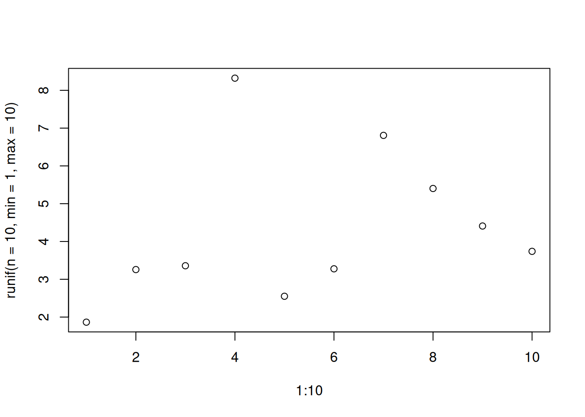
Plusieurs type de nuages de points sont disponibles. Le type de nuage de points est défini par le paramètre type de la commande plot(). Les types de nuages de points disponibles sont les suivants :
| Valeur | Description |
|---|---|
p |
points |
l |
lignes |
b |
lignes et points |
c |
lignes jointes par des segments droits |
o |
lignes jointes par des segments droits et points |
h |
barres verticales |
s |
plateau puis pente |
S |
pente puis creux |
n |
ne rien afficher |
plot(x = 1:10, y = runif(n = 10, min = 1, max = 10), type = "h")
hist(x = rnorm(n = 1000, mean = 0, sd = 1))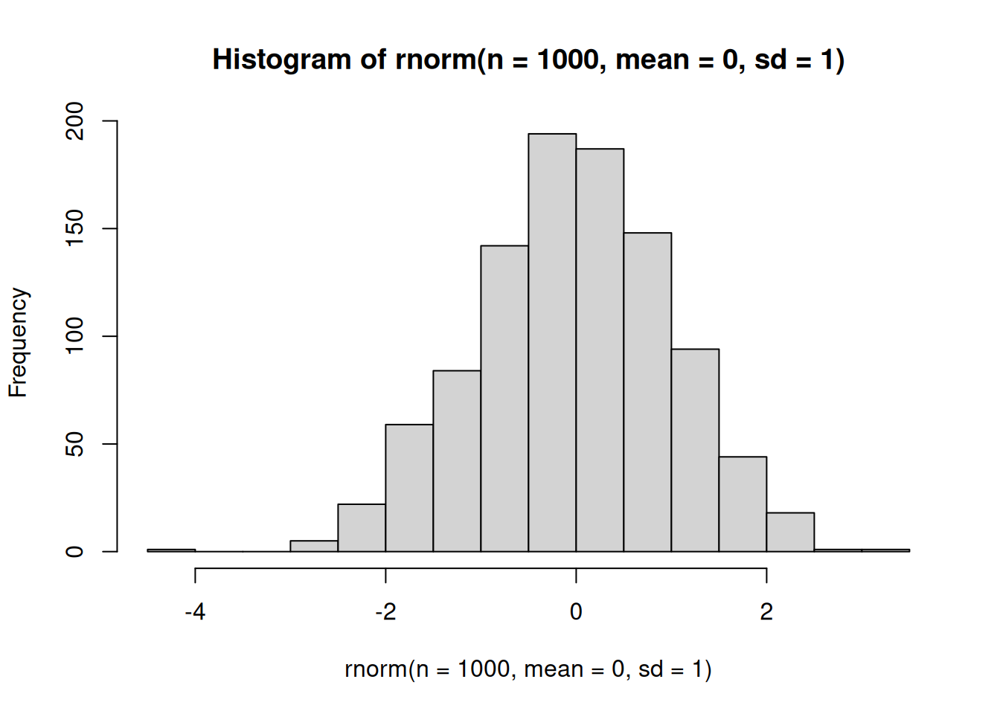
barplot(height = runif(n = 10, min = 1, max = 10))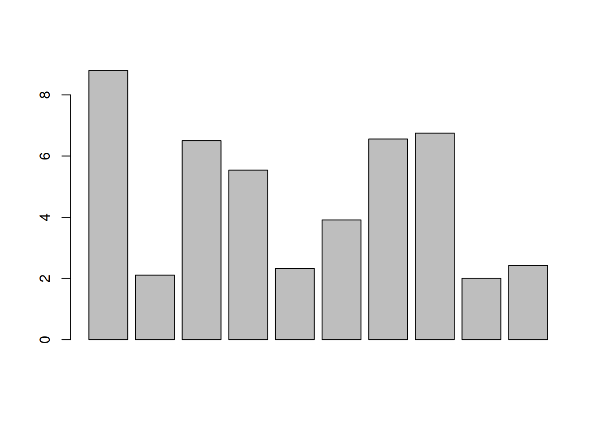
boxplot(x = runif(n = 10, min = 1, max = 10))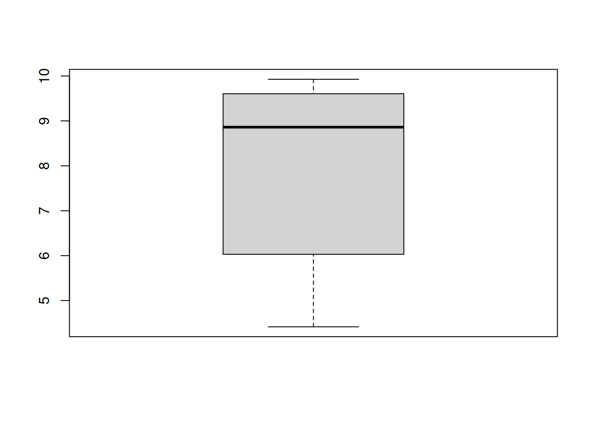
Les expressions mathématiques peuvent être utilisées pour tracer le comportement d’une fonction. Par exemple, la commande curve() permet de visualiser la fonction trigonométrique sin().
curve(sin(x), from = 0, to = 2 * pi)
par()La fonte du texte est définie par le paramètre font de la commande par(). Les valeurs possibles sont les suivantes :
| Valeur | Description |
|---|---|
1 |
Normal |
2 |
Gras |
3 |
Italique |
4 |
Gras et italique |
par(font = 3)
plot(x = 1:10, y = runif(n = 10, min = 1, max = 10))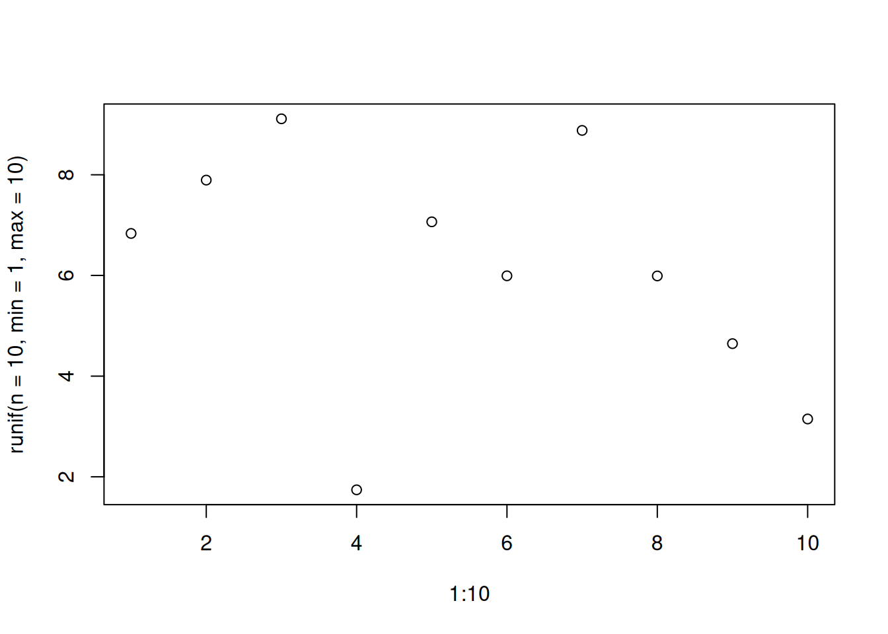
La taille du texte est définie par le paramètre cex de la commande par(). La valeur par défaut est 1. La valeur 2 permet d’augmenter la taille du texte de 200% et la valeur 0.5 permet de diminuer la taille du texte de 50%.
par(cex = 0.5, mar=c(1,1,1,1))
plot(x = 1:10, y = runif(n = 10, min = 1, max = 10))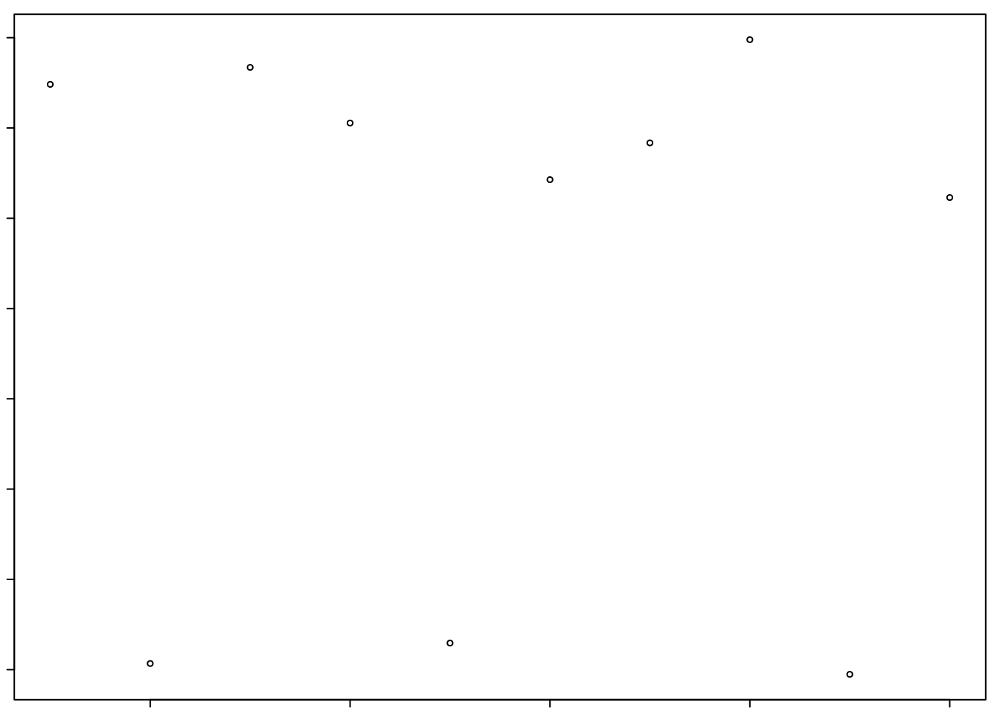
Le type de lignes est défini par le type de ligne lty, son épaisseur lwd et sa couleur col.
plot(x = 1:10, y = runif(n = 10, min = 1, max = 10), type = "l", lty = 2, lwd = 2, col = "red")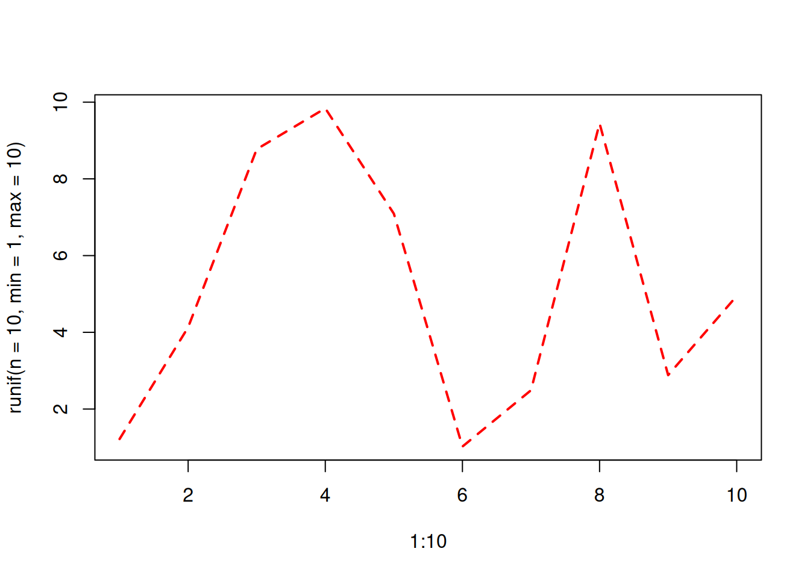
Les axes sont définis par les paramètres xaxt et yaxt. Les valeurs possibles sont les suivantes :
| Valeur | Description |
|---|---|
n |
Ne pas afficher les axes |
s |
Afficher les axes |
S |
Afficher les axes et les graduations |
d |
Afficher les axes et les graduations à l’intérieur du graphique |
D |
Afficher les axes et les graduations à l’intérieur du graphique |
plot(x = 1:10, y = runif(n = 10, min = 1, max = 10), xaxt = "n", yaxt = "n")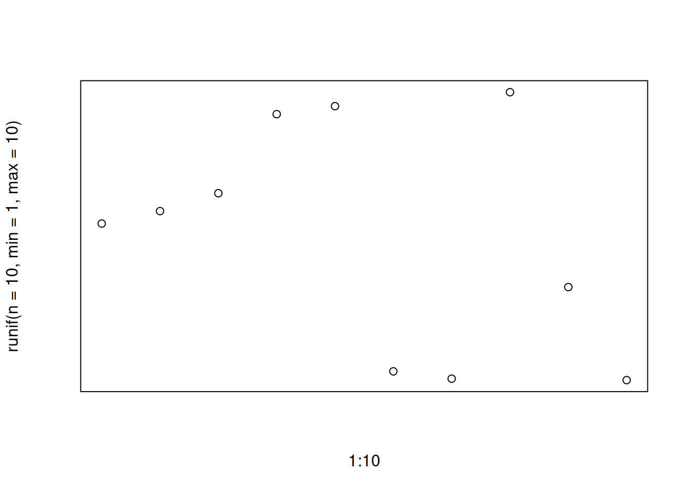
Les marges sont définies par les paramètres mar et mai. Les marges extérieures sont définies par le paramètre mar et les marges intérieures sont définies par le paramètre mai. Les marges sont définies en pouces. La commande par() permet de définir les marges extérieures et intérieures.
par(mar = c(1, 1, 1, 1), mai = c(1, 1, 1, 1))
plot(x = 1:10, y = runif(n = 10, min = 1, max = 10))
Graphique vierge
plot(x = 1:10, y = runif(n = 10, min = 1, max = 10), type = "n")
Axes et échelles
plot(x = 1:10, y = runif(n = 10, min = 1, max = 10), xaxt = "n", yaxt = "n")
axis(side = 1, at = 1:10)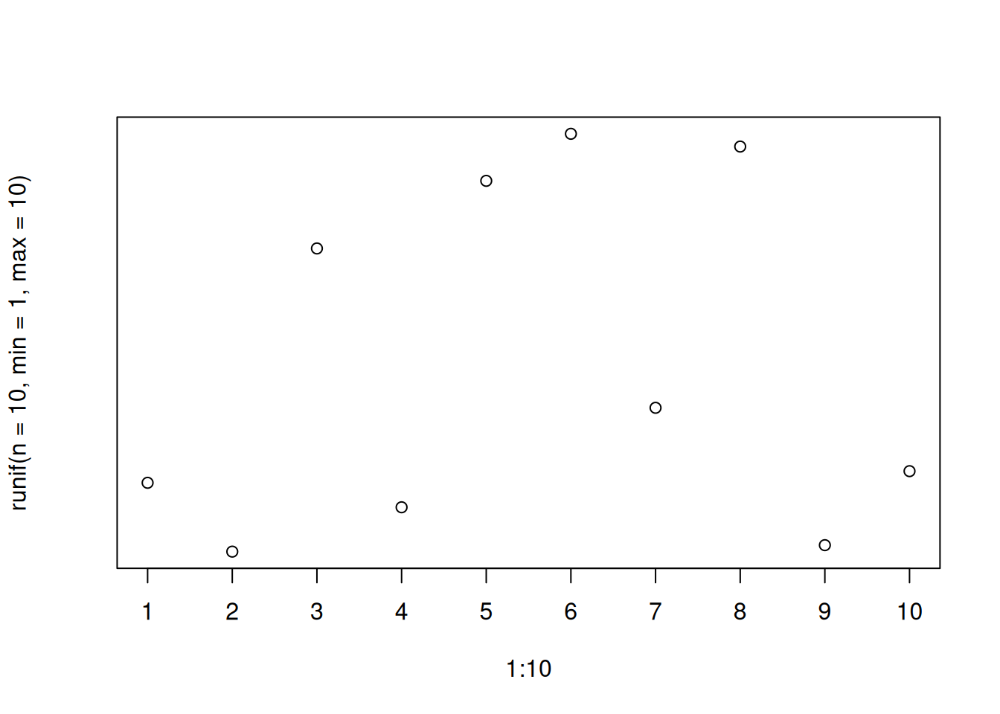
Texte
plot(x = 1:10, y = 1:10, type = "n")
text(x = 1:10, y = 1:10, labels = 1:10)Titre de figure
plot(x = 1:10, y = 1:10, type = "n")
title(main = "Titre de la figure")Légende
plot(x = 1:10, y = runif(n = 10, min = 1, max = 10), col = 1:10)
legend(x = "topright", legend = 1:10, fill = 1:10)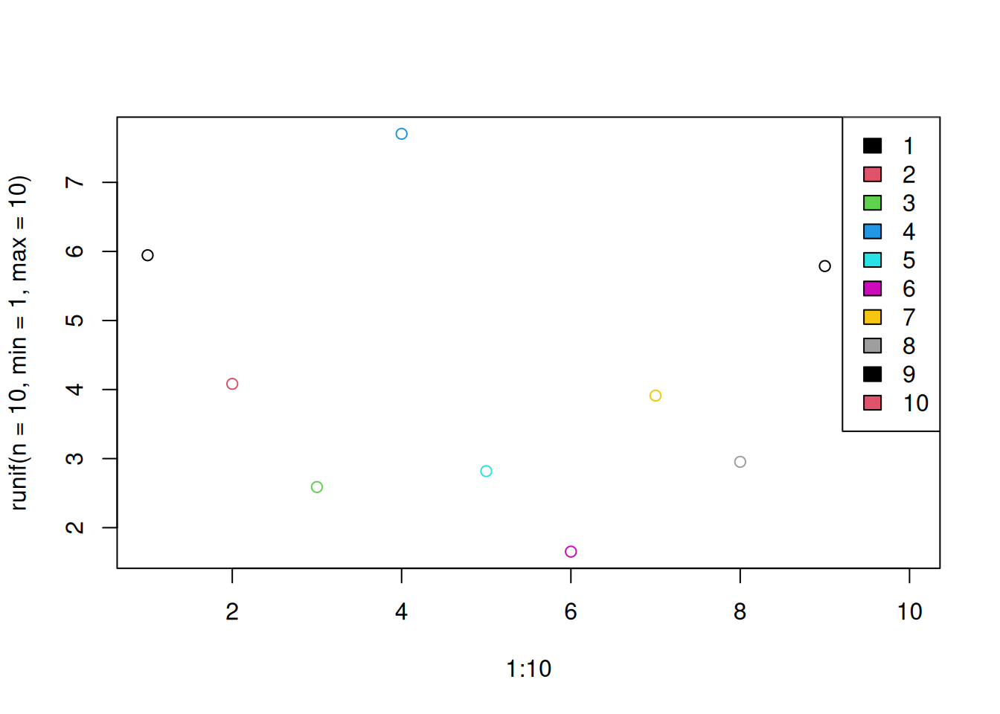
Flèches
plot(x = 1:10, y = 1:10, type = "n")
arrows(x0 = 1, y0 = 1, x1 = 10, y1 = 10)Lignes
plot(x = 1:10, y = 1:10, type = "n")
lines(x = 1:10, y = 10:1)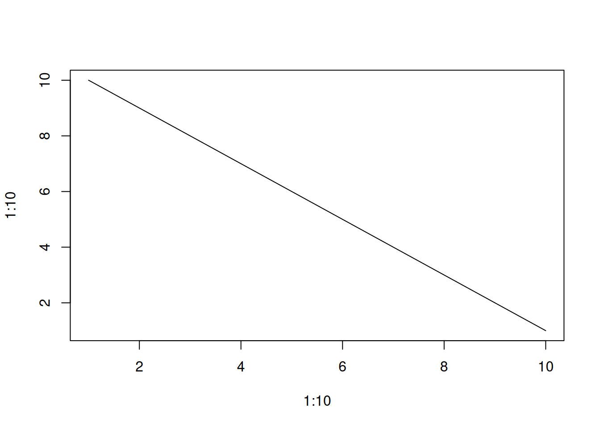
Points
plot(x = 1:10, y = 1:10, type = "n")
points(x = 1:10, y = runif(n = 10, min = 1, max = 10))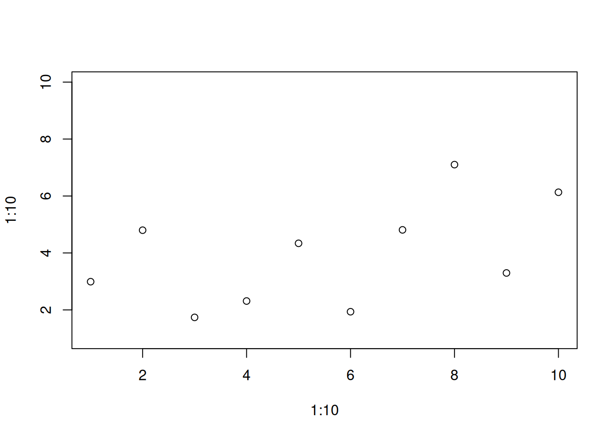
R permet de produire une figure, mais il est aussi possible de l’enregistrer dans un fichier. La commande png() permet d’enregistrer la figure dans un fichier png. La commande dev.off() permet de fermer le fichier sans lequel l’enregistrement ne se complètera pas.
png("figure.png")
plot(x = 1:10, y = runif(n = 10, min = 1, max = 10))
dev.off()D’autres formats sont aussi disponibles. Par exemple, pdf(), jpeg(), bmp() ou tiff().
L’art graphique sous R propose un guide d’utilisation du système graphique traditionnel de R pour produire des graphiques de haute qualité https://github.com/EcoNumUdS/BIO500/blob/master/references/graphsonr.pdf